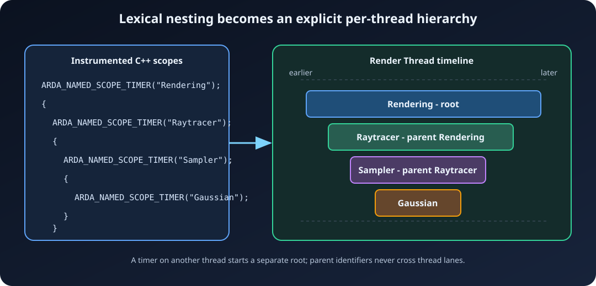

Instrumentation
ArdaTrace instrumentation describes events; it does not print timing strings from the measured process. Names are registered once, event records use integer identifiers, and the viewer reconstructs hierarchy from explicit parent scope identifiers.

Automatic function scopes
ARDA_SCOPE_TIMER() uses the enclosing function's __func__ value:
void BuildAccelerationStructure()
{
ARDA_SCOPE_TIMER();
// Traced as "BuildAccelerationStructure".
}
Use it near the beginning of a function to measure the remaining function body. The RAII timer records the end timestamp on normal return, early return, or C++ stack unwinding.
Explicitly named scopes
Use a stable string literal when a function contains multiple meaningful phases:
void RenderFrame()
{
ARDA_NAMED_SCOPE_TIMER("Rendering");
{
ARDA_NAMED_SCOPE_TIMER("Raytracer");
TraceScene();
}
{
ARDA_NAMED_SCOPE_TIMER("Post Processing");
ApplyPostProcessing();
}
}
The named macro caches its label at that call site. Do not pass a temporary or a value intended to change between invocations. Use a stable string literal.
Hierarchical scope paths
Each thread maintains its own active scope identifier. Constructing a timer stores the currently active identifier as its parent; destroying it restores that parent. Nested function calls work without manually repeating prefixes:
void Render()
{
ARDA_NAMED_SCOPE_TIMER("Rendering");
Raytrace();
}
void Raytrace()
{
ARDA_NAMED_SCOPE_TIMER("Raytracer");
SampleLighting();
}
void SampleLighting()
{
ARDA_NAMED_SCOPE_TIMER("Gaussian Sampler");
}
The viewer can display:
Rendering
└── Raytracer
└── Gaussian Sampler
Parent relationships never cross threads. Work transferred to another thread starts a new root hierarchy on that thread.
Thread names
Name each participating thread from that thread:
void RenderThreadMain()
{
arda::SetCurrentTraceThreadName("Render Thread");
ARDA_NAMED_SCOPE_TIMER("Render Thread Loop");
// ...
}
Calling the function again updates the viewer label for the same trace thread. Names are copied by the recorder.
Counter samples
Counters are timestamped double samples:
ARDA_TRACE_COUNTER("Visible Objects", VisibleObjectCount);
ARDA_TRACE_COUNTER("Upload Queue MiB", QueuedBytes / (1024.0 * 1024.0));
Sample at a meaningful cadence, such as once per frame or after a state change. Avoid emitting unchanged values from extremely hot loops.
Markers
Markers identify instantaneous events:
ARDA_TRACE_MARKER("Frame Begin");
ARDA_TRACE_MARKER("Shader Reload Requested");
The viewer draws markers vertically across the shared timeline, making them useful for correlating activity on multiple threads.
Direct API
Macros are preferred because they create one static FArdaTraceName per call
site. Code that needs a reusable registered name can call the API directly:
static const arda::FArdaTraceName QueueDepthName("Queue Depth");
arda::RecordTraceCounter(QueueDepthName, QueueDepth);
FArdaTraceName labels must remain valid for the process lifetime. String
literals satisfy this requirement.
Scope placement guidance
- Instrument subsystem boundaries and operations that are large enough to diagnose or optimize.
- Prefer stable names so aggregate rows combine equivalent work.
- Avoid a timer around every trivial accessor or iteration.
- Name worker threads before their first important event.
- Use counters for changing values, markers for points in time, and scopes for intervals.
- Keep capture start/stop outside instrumented worker activity.
Runtime behavior and overhead
When capture is active, a scope records two steady-clock timestamps and appends one completed event to its thread-local chunk. Counter and marker calls append one timestamped event. Full chunks are published under synchronization; the normal event path does not format strings or perform web operations.
Instrumentation still has measurable cost. Compare captures at the same instrumentation level, and disable tracing for builds where that cost is not acceptable:
cmake -S . -B build-shipping -DARDASHIR_ENABLE_TRACE=OFF